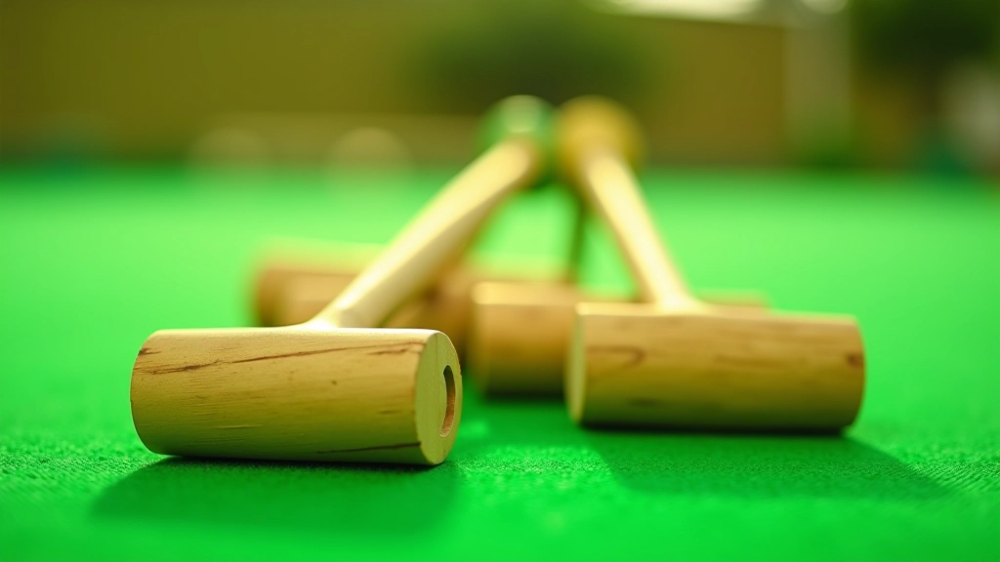
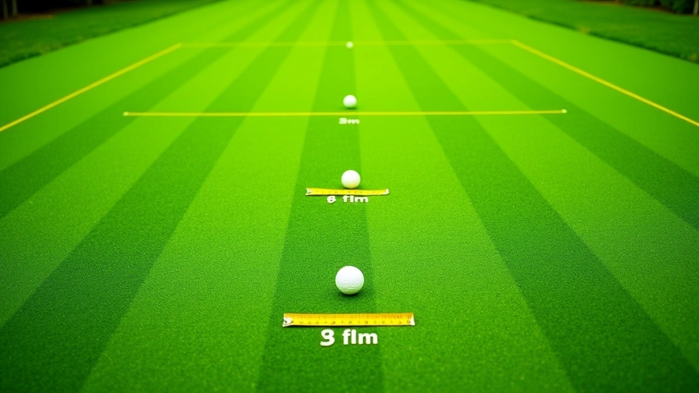

السرعة والقوة: إيجاد التوازن المثالي
كيفية حساب القوة المطلوبة لكل مسافة مختلفة، والأخطاء الشائعة التي يرتكبها اللاعب الجديد.
اقرأ المقالةشرح تفصيلي للحركات الأساسية والموقف الصحيح والقوة المناسبة لتنفيذ ضربة فعالة من بعيد عن الطوق.


الموقف السليم هو أساس كل ضربة فعالة. عندما تستعد لضربة الاقتراب من الطوق، يجب أن تقف بثقة وتوازن. قدماك يجب أن تكونا متباعدتين بمسافة تقارب عرض الكتفين، مع توجيه أحدهما نحو الطوق المستهدف.
الركبتان يجب أن تكونا مثنيتين قليلاً — ليس بشكل مبالغ، لكن بما يكفي لامتصاص القوة. الجسم ينحني من الخصر، والعمود الفقري يبقى مستقيماً نسبياً. هذا يسمح لك بنقل الطاقة من أرجلك إلى الذراعين بكفاءة. معظم اللاعبين المبتدئين يميلون إلى الانحناء الكثير — وهذا يقلل من السيطرة والدقة.
نقطة مهمة
توازنك أثناء الضربة سيحدد نصف دقتك. إذا كنت تميل أو تتحرك كثيراً، ستجد صعوبة في التحكم بالقوة والاتجاه معاً.

حركة الذراع في ضربة الاقتراب من الطوق تختلف عن الضربات الأخرى. بدلاً من الحركة العنيفة، تريد حركة سلسة ومضبوطة. العصا تتحرك للخلف أولاً — حوالي 30 إلى 45 سنتيمتر — ثم للأمام في حركة واحدة متصلة.
الذراع تبقى مستقيمة نسبياً طول الوقت. لا تحاول ثني المرفق كثيراً أثناء الحركة. هذا يقلل من الدقة. بدلاً من ذلك، دع الحركة تأتي من الكتف والورك. القوة تأتي من جسمك كله، لا من ذراعك وحدها.
ملاحظة تعليمية
هذه المقالة توفر معلومات تعليمية عن تقنيات لعبة الكروكيه. كل لاعب لديه أسلوبه الخاص، وما يعمل لشخص قد لا يعمل بنفس الطريقة لآخر. نحن نوصي بممارسة هذه الأساليب تحت إشراف مدرب متمرس للحصول على تغذية راجعة شخصية وتصحيح الأخطاء.
معرفة كم قوة تستخدم هي ما يفصل بين اللاعب الجيد والمبتدئ. ضربة الاقتراب من الطوق تتطلب حساساً عالياً للقوة. إذا ضربت بقوة كبيرة جداً، الكرة ستتجاوز الطوق. إذا كنت ضعيفاً جداً، قد لا تصل إليه.
المسافة من الكرة إلى الطوق تحدد القوة المطلوبة. من 3 إلى 5 أمتار — تحتاج حوالي 40 إلى 50 بالمائة من قوتك الكاملة. من 5 إلى 10 أمتار — 60 إلى 70 بالمائة. الممارسة تساعدك على تطوير الحس للمسافات.
تمرين عملي
ضع 5 كرات على بعد 4 أمتار من الطوق. حاول إدخال 3 منها بنجاح. كرر هذا يومياً لمدة أسبوعين. ستلاحظ تحسناً ملحوظاً في السيطرة على القوة.

متابعة الرحلة نحو إتقان الكروكيه
كيفية حساب القوة المطلوبة لكل مسافة مختلفة، والأخطاء الشائعة التي يرتكبها اللاعب الجديد.
اقرأ المقالة
تقنيات عملية لتقدير المسافات وحساب الزوايا الصحيحة قبل تنفيذ الضربة بدقة عالية.
اقرأ المقالة
برنامج تدريبي منظم يتضمن تمارين تدريجية وتحديات عملية لتحسين دقتك وثقتك.
اقرأ المقالةأساسيات ضربة الاقتراب من الطوق ليست معقدة، لكنها تحتاج إلى الممارسة والصبر. ركز أولاً على الموقف الصحيح — إذا كان موقفك مستقراً، كل شيء آخر سيتحسن. ثم اعمل على حركة العصا السلسة، وأخيراً على التحكم بالقوة.
لا تتوقع أن تصبح محترفاً في يومين أو أسبوع. اللاعبون الجيدون يقضون أسابيع وأشهر في تطوير هذه المهارات. لكن إذا مارست بانتظام — حتى 20 دقيقة يومياً — ستشعر بالفرق في غضون شهر واحد. استمتع بالعملية، وتذكر أن الكروكيه لعبة عن التركيز والدقة، وليس عن القوة الخام.
العودة إلى جميع المقالات